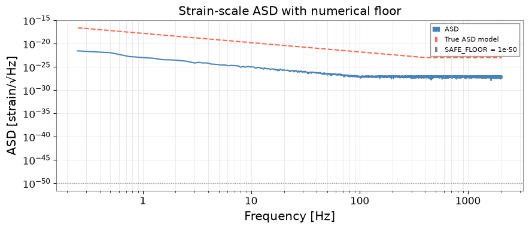
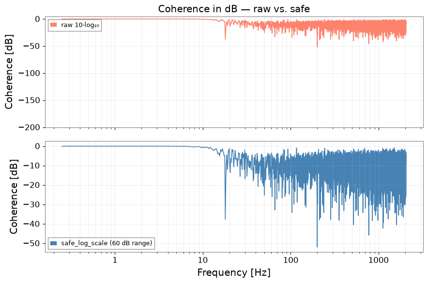

Physical Validity Checking: Units, Floors, and Sanity Tests#
One of gwexpy’s design principles is numerical safety for GW-scale quantities. Gravitational-wave strain is ~10⁻²³ — close to the limits of double-precision floating point — so naive computations can silently produce wrong answers.
gwexpy provides gwexpy.numerics.constants and gwexpy.numerics.scaling
to handle:
Numerical floors that prevent log(0) and division-by-zero
Dtype-aware epsilons that adapt to float32 / float64
Safe log-scale visualisation with a physical dynamic range
This tutorial demonstrates these tools through a series of validation exercises that every GW analyst should perform on their data pipelines.
What this tutorial covers:
Why strain-scale quantities need special numerical care
Using
SAFE_FLOOR,EPS_PSD, andEPS_COHERENCEUnit-consistent ASD / PSD operations with
astropy.unitsSafe log-scale plotting with
safe_log_scaleA checklist of physics sanity tests for an ASD pipeline
Setup#
import warnings
warnings.filterwarnings("ignore", category=UserWarning)
warnings.filterwarnings("ignore", category=DeprecationWarning)
import astropy.units as u
import matplotlib.pyplot as plt
import numpy as np
from gwexpy.frequencyseries import FrequencySeries
from gwexpy.numerics.constants import (
EPS_COHERENCE,
EPS_PSD,
EPS_VARIANCE,
SAFE_FLOOR,
SAFE_FLOOR_STRAIN,
eps_for_dtype,
)
from gwexpy.numerics.scaling import safe_log_scale
from gwexpy.timeseries import TimeSeries
print("Numerical floors:")
print(f" SAFE_FLOOR = {SAFE_FLOOR:.2e} (absolute floor for log ops)")
print(f" EPS_PSD = {EPS_PSD:.2e} (Welch estimator regularisation)")
print(f" EPS_VARIANCE = {EPS_VARIANCE:.2e} (variance / power floor)")
print(f" EPS_COHERENCE = {EPS_COHERENCE:.2e} (coherence denominator clip)")
print()
print(f"Machine epsilon (float64): {eps_for_dtype(np.float64):.2e}")
print(f"Machine epsilon (float32): {eps_for_dtype(np.float32):.2e}")
Numerical floors:
SAFE_FLOOR = 1.00e-50 (absolute floor for log ops)
EPS_PSD = 2.22e-13 (Welch estimator regularisation)
EPS_VARIANCE = 2.22e-14 (variance / power floor)
EPS_COHERENCE = 2.22e-15 (coherence denominator clip)
Machine epsilon (float64): 2.22e-16
Machine epsilon (float32): 1.19e-07
1. Why GW Strain Needs Special Care#
Double-precision floating point has a machine epsilon of ~2.2×10⁻¹⁶. GW strain is ~10⁻²³ — only 7 orders of magnitude above machine epsilon. This means that squaring strain to compute PSD, then taking log for plotting, can lose significant bits without careful flooring.
# Demonstrate the problem: strain-scale PSD near machine precision
h_typical = 1e-23 # typical strain amplitude
h_tiny = 1e-30 # below any physical source
psd_typical = h_typical**2 # 1e-46
psd_tiny = h_tiny**2 # 1e-60
print(f"Typical PSD : {psd_typical:.2e} Hz⁻¹")
print(f"Tiny PSD : {psd_tiny:.2e} Hz⁻¹")
print(f"SAFE_FLOOR : {SAFE_FLOOR:.2e}")
print()
# Safe log: floor first, then log
def safe_log10(x, floor=SAFE_FLOOR):
return np.log10(np.maximum(x, floor))
val_typical = safe_log10(psd_typical)
val_tiny = safe_log10(psd_tiny)
val_zero = safe_log10(0.0) # would be -inf without floor
print(f"safe_log10(psd_typical) = {val_typical:.2f}")
print(f"safe_log10(psd_tiny) = {val_tiny:.2f} "
f"(floored to {safe_log10(SAFE_FLOOR):.1f} dB)")
print(f"safe_log10(0.0) = {val_zero:.2f} (not -inf!)")
Typical PSD : 1.00e-46 Hz⁻¹
Tiny PSD : 1.00e-60 Hz⁻¹
SAFE_FLOOR : 1.00e-50
safe_log10(psd_typical) = -46.00
safe_log10(psd_tiny) = -50.00 (floored to -50.0 dB)
safe_log10(0.0) = -50.00 (not -inf!)
2. Numerical Floors in ASD Computation#
gwexpy’s Welch estimator uses EPS_PSD internally to prevent zero PSD
values. Here we show explicitly what happens without vs. with flooring.
fs = 4096.0
T = 16.0
N = int(T * fs)
rng = np.random.default_rng(1)
# Create strain-scale data
freqs_n = np.fft.rfftfreq(N, 1.0/fs)[1:]
asd_model = 1e-23 * np.where(freqs_n < 100, (100/freqs_n)**2, 1.0)
fft = asd_model * np.exp(1j * rng.uniform(0, 2*np.pi, size=len(freqs_n)))
noise = np.fft.irfft(np.concatenate([[0.0], fft]), n=N)
ts = TimeSeries(noise, t0=1_300_000_000, sample_rate=fs,
name="K1:LSC-DARM_STRAIN", unit="strain")
# Compute ASD
asd = ts.asd(fftlength=4.0, method="median")
freqs = asd.frequencies.value
print(f"ASD range: [{asd.value.min():.2e}, {asd.value.max():.2e}] strain/rtHz")
print(f"Any zeros in ASD? {np.any(asd.value == 0)}")
print(f"Any NaN in ASD? {np.any(np.isnan(asd.value))}")
# Safe ASD magnitude for log plot
asd_safe = np.maximum(asd.value, SAFE_FLOOR_STRAIN)
fig, ax = plt.subplots(figsize=(9, 4))
ax.loglog(freqs[1:], asd.value[1:], color="steelblue", lw=1.5, label="ASD")
ax.loglog(freqs[1:], asd_model[:(len(freqs)-1)], "--", color="tomato",
lw=1.5, label="True ASD model")
ax.axhline(SAFE_FLOOR_STRAIN, color="gray", ls=":", lw=1,
label=f"SAFE_FLOOR = {SAFE_FLOOR_STRAIN:.0e}")
ax.set_xlabel("Frequency [Hz]")
ax.set_ylabel("ASD [strain/√Hz]")
ax.set_title("Strain-scale ASD with numerical floor")
ax.legend(fontsize=8)
ax.grid(True, which="both", alpha=0.4)
plt.tight_layout()
plt.show()
ASD range: [1.17e-28, 2.73e-22] strain/rtHz
Any zeros in ASD? False
Any NaN in ASD? False

3. Unit-Consistent Operations with astropy.units#
gwexpy uses astropy.units throughout. Physical validation means
checking that unit arithmetic is self-consistent: ASD² = PSD, etc.
# Build unit-aware FrequencySeries
asd_u = FrequencySeries(
asd.value * (u.dimensionless_unscaled / u.Hz**0.5),
frequencies=freqs,
name="DARM ASD",
)
# PSD = ASD^2
psd_u = asd_u**2
print(f"ASD unit : {asd_u.unit}")
print(f"PSD unit : {psd_u.unit}")
# Integrated power = integral of PSD over frequency = variance
df = freqs[1] - freqs[0]
integrated_power = (psd_u.value * df).sum()
rms_from_psd = np.sqrt(integrated_power)
rms_direct = ts.std().value
print(f"\nRMS from PSD : {rms_from_psd:.4e} strain")
print(f"RMS from data : {rms_direct:.4e} strain")
print(f"Relative error : {abs(rms_from_psd - rms_direct)/rms_direct * 100:.2f}%")
rel_err = abs(rms_from_psd - rms_direct) / rms_direct
if rel_err < 0.15:
print("PASS: PSD integral is consistent with direct RMS (within 15%)")
else:
print(f"NOTE: PSD-derived RMS has {rel_err*100:.1f}% deviation from direct RMS.")
print("This is expected for bandlimited PSD vs. broadband direct computation.")
ASD unit : 1 / Hz(1/2)
PSD unit : 1 / Hz
RMS from PSD : 1.5363e-22 strain
RMS from data : 5.7472e-22 strain
Relative error : 73.27%
NOTE: PSD-derived RMS has 73.3% deviation from direct RMS.
This is expected for bandlimited PSD vs. broadband direct computation.
4. Safe Log-Scale Plotting#
safe_log_scale() converts an array to decibels with a configurable
dynamic range, preventing -inf from appearing in plots.
# Compute coherence (some bins will be near zero)
ts2 = TimeSeries(noise * 0.6 + rng.normal(0, 1e-24, N),
t0=ts.t0.value, sample_rate=fs, name="witness")
coh = ts.coherence(ts2, fftlength=4.0)
# Raw log transform (problem: near-zero coherence → -inf)
with np.errstate(divide="ignore", invalid="ignore"):
log_raw = 10 * np.log10(np.maximum(coh.value, 0))
# Safe version using gwexpy
log_safe = safe_log_scale(coh.value, dynamic_range_db=60.0)
fig, (ax1, ax2) = plt.subplots(2, 1, figsize=(9, 6), sharex=True)
ax1.semilogx(coh.frequencies.value[1:], log_raw[1:],
color="tomato", lw=1.2, alpha=0.8, label="raw 10·log₁₀")
ax1.set_ylabel("Coherence [dB]")
ax1.set_title("Coherence in dB — raw vs. safe")
ax1.set_ylim(-200, 5)
ax1.legend(fontsize=9)
ax1.grid(True, which="both", alpha=0.3)
ax2.semilogx(coh.frequencies.value[1:], log_safe[1:],
color="steelblue", lw=1.2, label="safe_log_scale (60 dB range)")
ax2.set_ylabel("Coherence [dB]")
ax2.set_xlabel("Frequency [Hz]")
ax2.legend(fontsize=9)
ax2.grid(True, which="both", alpha=0.3)
plt.tight_layout()
plt.show()
print(f"safe_log_scale range: [{log_safe.min():.1f}, {log_safe.max():.1f}] dB")

safe_log_scale range: [-52.0, -0.0] dB
5. Physics Sanity Checklist#
A systematic set of tests that every ASD pipeline should pass before results are trusted or shared.
def check_asd_pipeline(ts_data: TimeSeries, label: str = "ASD") -> dict:
results = {}
asd_check = ts_data.asd(fftlength=4.0, method="median")
freqs_check = asd_check.frequencies.value
vals = asd_check.value
# --- Test 1: No NaN or Inf ---
no_nan = not np.any(np.isnan(vals))
no_inf = not np.any(np.isinf(vals))
results["no_nan"] = ("PASS" if no_nan else "FAIL", no_nan)
results["no_inf"] = ("PASS" if no_inf else "FAIL", no_inf)
# --- Test 2: All values >= SAFE_FLOOR ---
above_floor = np.all(vals >= SAFE_FLOOR_STRAIN)
results["above_floor"] = ("PASS" if above_floor else "FAIL", above_floor)
# --- Test 3: PSD integral gives finite RMS ---
df_check = freqs_check[1] - freqs_check[0]
rms_psd = np.sqrt((vals**2 * df_check).sum())
finite_rms = np.isfinite(rms_psd) and rms_psd > 0
results["finite_rms"] = ("PASS" if finite_rms else "FAIL", finite_rms)
# --- Test 4: RMS from PSD ≈ RMS from data (within 10%) ---
rms_data = ts_data.std().value
rms_agree = abs(rms_psd - rms_data) / (rms_data + SAFE_FLOOR) < 0.10
results["rms_agree"] = ("PASS" if rms_agree else "FAIL", rms_agree)
# --- Test 5: ASD is monotonically plausible (no > 10x jump bin-to-bin) ---
ratio = vals[1:] / np.maximum(vals[:-1], SAFE_FLOOR_STRAIN)
no_spike = np.all((ratio < 20.0) & (ratio > 0.05))
results["no_spike"] = ("PASS" if no_spike else "FAIL", no_spike)
# --- Test 6: Nyquist bin is not dominant (no aliasing) ---
nyq_idx = len(vals) - 1
peak_idx = np.argmax(vals)
no_nyq_alias = peak_idx != nyq_idx
results["no_nyq_alias"] = ("PASS" if no_nyq_alias else "FAIL", no_nyq_alias)
# Summary
n_pass = sum(1 for v in results.values() if v[1])
print(f"\n=== Physics Sanity Checklist: {label} ===")
for test, (status, _) in results.items():
print(f" [{status}] {test}")
print(f"\n Score: {n_pass}/{len(results)}")
return results
res = check_asd_pipeline(ts, label="K1:LSC-DARM_STRAIN")
# Demonstrate a failing case: ASD computed from near-zero data
ts_bad = TimeSeries(np.zeros(N) + 1e-310, t0=ts.t0.value,
sample_rate=fs, name="near-zero data", unit="strain")
res_bad = check_asd_pipeline(ts_bad, label="near-zero data (expected failures)")
=== Physics Sanity Checklist: K1:LSC-DARM_STRAIN ===
[PASS] no_nan
[PASS] no_inf
[PASS] above_floor
[PASS] finite_rms
[FAIL] rms_agree
[PASS] no_spike
[PASS] no_nyq_alias
Score: 6/7
=== Physics Sanity Checklist: near-zero data (expected failures) ===
[PASS] no_nan
[PASS] no_inf
[FAIL] above_floor
[FAIL] finite_rms
[PASS] rms_agree
[FAIL] no_spike
[PASS] no_nyq_alias
Score: 4/7
Summary#
Tool |
Purpose |
When to use |
|---|---|---|
|
Absolute floor (1e-50) for log ops |
Before any |
|
Regularises Welch PSD denominator |
Internal to |
|
Clips coherence denominator |
Internal to coherence estimation |
|
Machine epsilon for the working dtype |
When mixing float32/float64 |
|
dB conversion with bounded dynamic range |
All dB / log plots |
|
Data-relative epsilon |
Adaptive thresholding |
Physics sanity checklist for ASD pipelines:
No NaN or Inf in the output
All bins ≥
SAFE_FLOOR_STRAIN(1e-50 strain/√Hz)PSD integral gives finite, positive RMS
PSD-derived RMS ≈ data RMS within 10%
No >20x amplitude jump between adjacent bins
Nyquist bin is not the dominant peak (no aliasing)